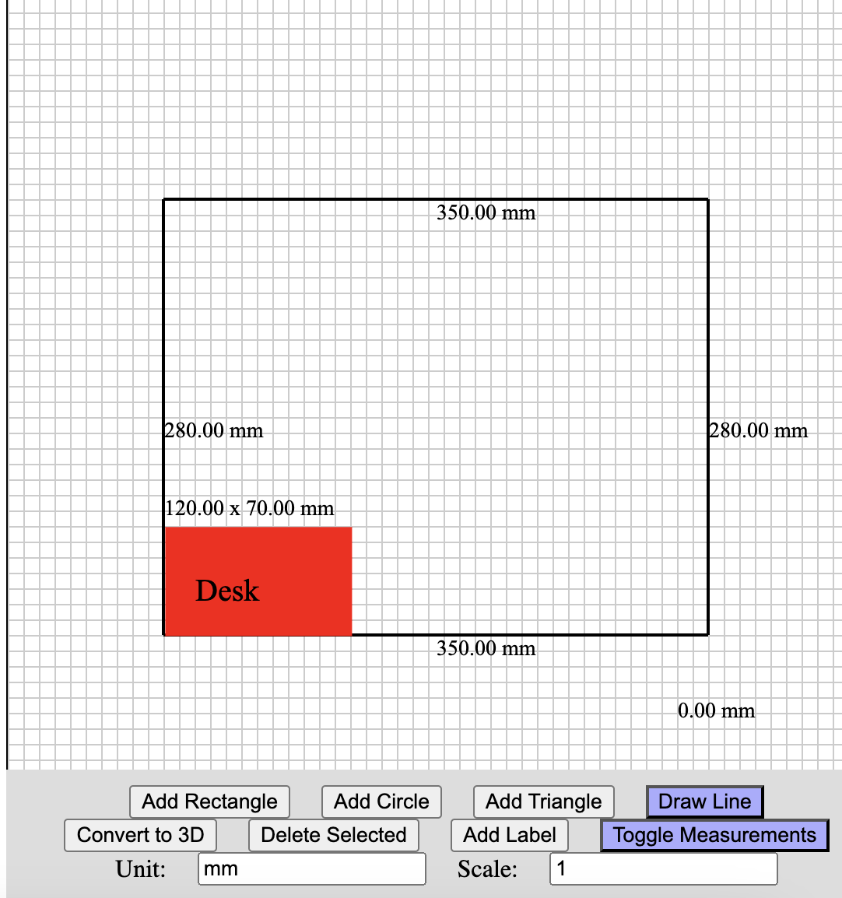

Programming is also my hobby. Sometimes, I think of random things that would be a good challenge. Here they are:
Stack: Python CLI
Using Google Colab, I utilized the Aubio, music21, and SoundFile libraries to convert an MP3 file to MIDI. The MIDI file could then be mapped to a pitch and could identify the notes being played. It is capable of accurately converting piano and flute notes to alphabetical characters.
The idea for this came from my relative pitch skills. It was a struggle to share my musical ideas with others. Unfortunately, this project is not hosted anywhere.
Stack: Dart on Flutter, with an Ubuntu database server and PHP
I created this as part of a Mobile App and Cloud assignment for my Computing degree. Again, this isn't hosted anywhere, but you can see the screenshots below:
Stack: JavaScript
During the summer, I wanted to build a shed. Frustrated with available floor plan modeling software, I decided to build my own. I'm still working on it, and the final goal is to integrate AI for converting the bird’s eye view into a 3D model.
Stack: Ruby on Rails
A friend of mine, a barber, was frustrated with subscription costs for booking software. I built him a personal website, allowing him to focus on barbering while I handle the technical aspects.
View this live!